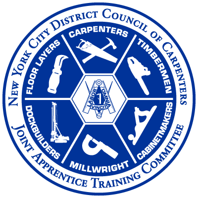

NYCDCCTC Quick Links
Search The Web
Search
Frequently Used
TRAIN
School Website
WordPress Admin
CPanel
SST Application
List of Online Classes w/ Outside Providers
Reimbursement Request Form
Facebook Page
WebLaunch
Microsoft Office Portal
Online SST Application (Shared Excel)
Reimbursement Requests (Shared Excel)
OWL Share
BuildingWorks-CTC Shared Files (& Grants)
Paylocity Login
Digital Signage (Morning)
|
(Evening)
|
(Weekend)
Github
Zoom Admin
Perfect Printing Solutions
Performance Pro HR
SWAC Card
membersupport@nycdistrictcouncil.org
UBC Websites
Carpenters.org
Carpenters.org Login
District Council
Benefit Fund
Union Fusion
DOB
DOB Training Connect
NYC DOB Site Safety Training (SST) Page
DOB Course Provider Files Dropbox
DOB Approved Course Providers
DOB SST Card Implementation Guidelines (PDF)
Grants
Rutgers HWWT
Qualtrics
OSHA Verification
Outreach Portal (CTC)
11 - Keene State College OSHA Education
(
Verify Link
)
12 - Rutgers School of Public Health
(
Verify Link
)
13 - Rochester Institute of Technology OSHA Ed.
(
Verify Link
)
14 - Mid -Atlantic OTI
(
Verify Link
)
15, 19 - Center for Construction Research & Training
(
Verify Link
)
18 - North Carolina State University
(
Verify Link
)
20 - University of South Florida
(
Verify Link
)
21 - Great Lakes Regional OSHA Education
(
Verify Link
)
24 - National Safety Education Center
(
Verify Link
)
26 - University of Texas @Arlington OSHA Education
(
Verify Link
)
31 - California State University of Dominguez Hills
(
Verify Link
)
32 - Chabot-Las Positas Community College
(
Verify Link
)
34 - University of California, San Diego
(
Verify Link
)
36 - University of South Florida
(
Verify Link
)
38 - Volunteer State Community College
(
Verify Link
)